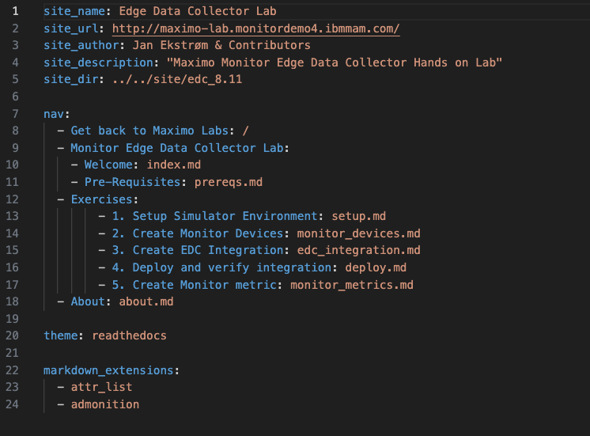
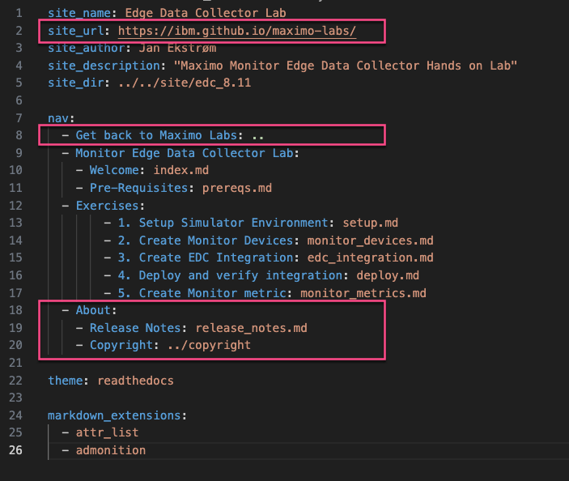

Objectives
The mkdocs.yml file for all labs needs to be updated with the following:
- Site information
- Link to Home changed to relative URL (..)
- New About section
The About information has changed to be a separate section. The about.md file must be renamed to release_notes.md and the information about contributers and change information is kept. The about section to include link to one common Copyright page (../copyright) instead of being a part of the about.md file => easier to maintain in one place only on the top level.
Before

After
